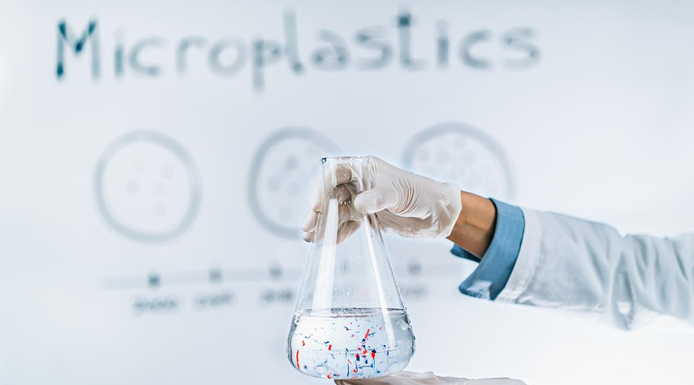
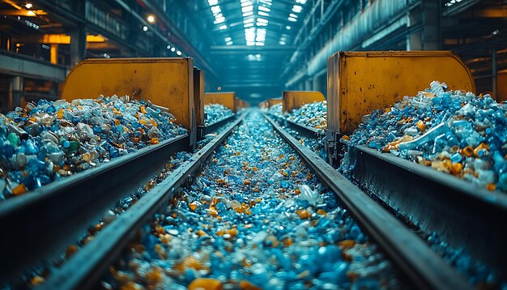

Learn more about Plastic Pollution
Learn more with NatureFirst
NatureFirst aims to be a resourceful platform with solid information for individuals to gain deeper knowledge and understanding regarding the plastic pollution.
Did you know?
Most of our everyday products are being made by plastic but how is plastic made?
Plastic production is a multi-step process, the general steps are as follows:-
Step 1: Extraction of Raw materials
Step 2: Refinemenet
Step 3: Polymerisation
Step 4: Additives
Step 5: Shaping
Step 6: Cooling down
Did you know?
Microplastics have been found in the human body but the more concerning part is that researchers are just starting to understand the potential impacts of plastics in the body. The research findings have even detected microplastics in serveral brain tissues of mice
Did you know?
Humans currently produce more than 350 million metric tons of plastic waste per year but plastic production is projected to triple by 2060 to a stagerring one billion metric tons.
